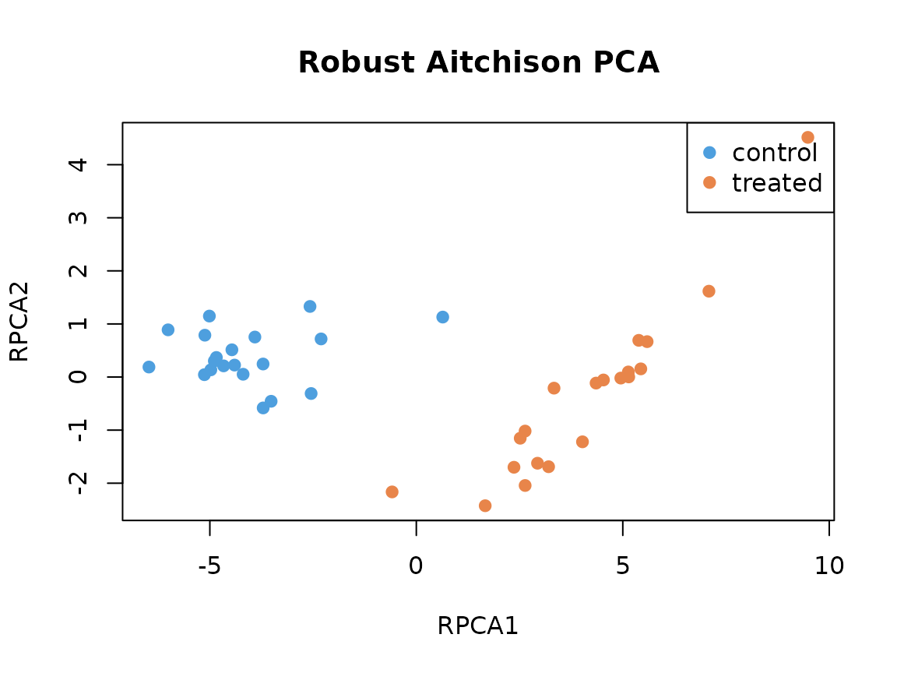

Compositional Analysis of Microbiome Data
Source:vignettes/articles/compositional.Rmd
compositional.RmdWhy sequencing data are compositional
Amplicon (16S, ITS) and shotgun metagenomic sequencing don’t count every microbe in a sample. They count a few thousand to a few million reads drawn from a library of fixed size, and that size is set by the sequencer, not by the biology. A sample’s read total therefore carries no information about how many microbes were there, and each taxon’s count is only meaningful relative to the other taxa in the same sample. Data like this are compositional: they live on a simplex, and only the ratios between parts are informative.
That has practical consequences, explained in the open-access reviews by Gloor et al. (2017) and Quinn et al. (2018):
- When one taxon blooms, every other taxon’s relative abundance falls, even if its absolute abundance didn’t change. Tests on relative abundances then report many false “decreases”.
- Correlations between relative abundances are distorted by the closure and change when taxa are added to or dropped from the table.
- Results depend on the arbitrary choices used to deal with zeros.
The log ratio of two taxa is unaffected by all of this: it is the same whether you compute it from absolute abundances, relative abundances or raw read counts. Compositional data analysis (CoDa; Aitchison 1982) builds every method on log ratios.
This article walks through a compositional workflow with ecodive. Some of the functions are already in ecodive; others are planned (see the package’s development plans). For each planned function the article shows the call it will have, marked planned, followed by a stand-in that runs today: base R, or an established package.
| Step | Question | ecodive | Status |
|---|---|---|---|
| Zeros | How do I take logs of zeros? |
pseudocount, norm = 'rclr';
replace_zeros()
|
available; planned |
| Transforms | Which log-ratio coordinates? |
normalize(norm = 'clr' / 'rclr');
alr(), ilr(), philr()
|
available; planned |
| Beta diversity | Do communities differ? |
aitchison(),
robust_aitchison(), rpca(),
pca(), permanova(), permdisp();
philr_distance(), rpca_phylo()
|
available; planned |
| Log ratios | Which taxa shift relative to which? |
rpca() loadings; log_ratio(),
balance()
|
available; planned |
| Differential abundance | Which taxa differ? |
ancom(), ancombc(),
ancombc2(), dirmult_ttest()
|
planned |
| Co-occurrence | Which taxa move together? |
vlr(), rho_p(),
phi_s()
|
planned |
| Absolute abundance | Did taxa really increase? |
qmp_scale(),
qmp_rarefy()
|
planned |
| Repeated measures and multi-omics | Subjects over time; several ’omics |
ctf(), rpca_joint()
|
planned |
A simulated study
Simulated data let us compare every method with the truth. Forty stool samples, 20 controls and 20 treated, contain 150 taxa (ASVs). In the treated group the five most abundant taxa bloom 8-fold and taxa 6–10 drop 4-fold, in absolute terms; the other 140 taxa don’t change. Each sample is then “sequenced”: its composition is sampled at a random depth of 5,000–40,000 reads, as a sequencer would.
library(ecodive)
set.seed(42)
n_taxa <- 150
groups <- rep(c('control', 'treated'), each = 20)
n <- length(groups)
taxa <- sprintf('ASV%03d', seq_len(n_taxa))
samples <- sprintf('S%02d', seq_len(n))
# Typical absolute abundance of each taxon: heavy-tailed, sorted so that
# ASV001 is the most abundant.
base <- sort(exp(rnorm(n_taxa, mean = 0, sd = 2)), decreasing = TRUE)
# True fold changes in absolute abundance (treated vs control).
fold <- rep(1, n_taxa)
fold[1:5] <- 8 # blooms
fold[6:10] <- 1 / 4 # declines
changed <- fold != 1
# Absolute abundances: the group effect, plus biological noise, plus
# patchy absences of the rarer taxa.
absolute <- t(sapply(groups, function (g) {
mu <- if (g == 'treated') base * fold else base
mu * exp(rnorm(n_taxa, 0, 0.5)) }))
patchy <- matrix(runif(n * n_taxa) < 0.3, n, n_taxa)
patchy[, 1:20] <- FALSE
absolute[patchy] <- 0
dimnames(absolute) <- list(samples, taxa)
# Total microbial load (e.g. cells per gram), which in a real study would
# have to be measured separately.
load <- rowSums(absolute)
# Sequencing: draw reads from each sample's composition.
depth <- round(runif(n, 5000, 40000))
counts <- t(sapply(seq_len(n), function (i) rmultinom(1, depth[i], absolute[i, ])))
dimnames(counts) <- list(samples, taxa)
counts[1:5, 1:6]
#> ASV001 ASV002 ASV003 ASV004 ASV005 ASV006
#> S01 8584 1695 4009 1480 1236 461
#> S02 7078 4514 1776 1924 1166 705
#> S03 3198 2471 1677 1102 1150 571
#> S04 6436 3919 3026 2170 959 1674
#> S05 4966 1842 2315 2375 618 1273
mean(counts == 0) # proportion of zeros
#> [1] 0.3563333
# Taxa found in at least 90% of samples, for the steps that need them.
prevalent <- colMeans(counts > 0) >= 0.9
sum(prevalent)
#> [1] 20The problem, in one test
Compare each unchanged taxon between groups with a Wilcoxon test, first on the true absolute abundances, then on relative abundances (the usual approach):
rel <- counts / rowSums(counts)
wilcox_p <- function (x) wilcox.test(x ~ groups, exact = FALSE)$p.value
p_abs <- apply(absolute[, !changed], 2, wilcox_p)
p_rel <- apply(rel[, !changed], 2, wilcox_p)
# Proportion of the 140 unchanged taxa called "different" at p < 0.05
c(absolute = mean(p_abs < 0.05), relative = mean(p_rel < 0.05))
#> absolute relative
#> 0.08571429 0.63571429The bloom of five taxa pushes every other taxon’s share down, so most taxa that didn’t change look as if they decreased. A log ratio between two unchanged taxa doesn’t have this problem, because both shares fall by the same factor:
pair <- c('ASV011', 'ASV012') # two unchanged taxa
true_prop <- absolute / rowSums(absolute) # true relative abundances
lr_abs <- log(absolute[, pair[1]] / absolute[, pair[2]])
lr_prop <- log(true_prop[, pair[1]] / true_prop[, pair[2]])
all.equal(lr_abs, lr_prop) # identical, whatever happened to the total
#> [1] TRUE
# The ratio of read counts estimates the same quantity, up to sampling noise:
lr_counts <- log(counts[, pair[1]] / counts[, pair[2]])
cor(lr_abs, lr_counts)
#> [1] 0.9842692The rest of this article builds on that idea.
Zeros
About a third of this table is zeros, which is typical of amplicon data. A log of zero is undefined, and how zeros are handled can change results (Gloor et al. 2017; Lubbe et al. 2021). There are three families of approaches.
1. Add a pseudocount (available). Every function
with norm = 'clr' takes pseudocount, added to
every cell. With the default NULL, ecodive uses half the
smallest non-zero value and warns. Simple, but it changes the ratios
between the non-zero taxa, most for shallow samples.
2. Treat zeros as missing (available). The
robust clr (rclr) uses only the non-zero values of
each sample, leaving zeros out entirely. It underlies
robust_aitchison() and rpca() (Martino et al.
2019), which complete the missing values with a low-rank
model.
3. Replace zeros multiplicatively (planned:
replace_zeros()). Each zero gets a small value, and the
sample’s non-zero parts are shrunk by a common factor, so the ratios
between them are preserved. The Bayesian-multiplicative versions choose
each zero’s value from the data (Martín-Fernández et
al. 2015). The geometric Bayesian-multiplicative method
(GBM) of the zCompositions package (Palarea-Albaladejo
& Martín-Fernández 2015) is the most used in microbiome
work.
# Planned in ecodive:
zf <- replace_zeros(counts, 'gbm') # or replace_zeros_gbm(counts)
zf <- replace_zeros_mult(counts) # simple multiplicative replacement
# Available now, in zCompositions (CRAN):
# (by default it drops taxa or samples that are at least 80% zeros)
zf <- zCompositions::cmultRepl(counts, method = 'GBM', output = 'prop')Until then, simple multiplicative replacement (the method of
scikit-bio’s multi_replace()) takes four lines of base
R:
mult_replace <- function (counts, delta = 1 / ncol(counts)^2) {
x <- counts / rowSums(counts) # proportions
z <- x == 0
x <- x * (1 - rowSums(z) * delta) # shrink the non-zero parts
x[z] <- delta # give each zero the value delta
x
}
zf <- mult_replace(counts)
range(rowSums(zf)) # still proportions
#> [1] 1 1A zero-free table needs no pseudocount, so it goes straight into any
function with norm = 'clr', aitchison(), and
the planned alr(), ilr(), philr()
and vlr().
Check that your conclusions don’t depend on the choice. Here is the same PERMANOVA under three treatments of zeros. The conclusion holds in all three, but the effect size (R²) depends on the choice:
zero_treatments <- list(
'pseudocount = 1' = aitchison(counts, pseudocount = 1),
'multiplicative' = aitchison(zf),
'robust (rclr)' = robust_aitchison(counts) )
t(sapply(zero_treatments, function (dm) {
res <- permanova(dm, groups, seed = 1)
c(R2 = res$r2, F = unname(res$statistic), p = res$p_value) }))
#> R2 F p
#> pseudocount = 1 0.07759500 3.196654 0.001
#> multiplicative 0.08185786 3.387927 0.001
#> robust (rclr) 0.14845324 6.624678 0.001When the planned replace_zeros() wrapper arrives,
list_zero_replacements() will make this a loop over every
method.
Log-ratio transforms
A transform maps each sample’s composition to real-valued coordinates where ordinary statistics apply.
| Transform | ecodive | Coordinates | Notes |
|---|---|---|---|
| centered log ratio (clr) |
normalize(norm = 'clr'), or
norm = 'clr' in beta_div(),
pca(), envfit(), rda(), … |
one per taxon, relative to the sample’s geometric mean | the most used; its coordinates sum to 0 |
| robust clr (rclr) | normalize(norm = 'rclr') |
non-zero taxa only | zeros are missing, not imputed |
| additive log ratio (alr) |
alr() (planned) |
each taxon relative to one reference taxon | easy to interpret; not isometric |
| isometric log ratio (ilr) |
ilr() (planned) |
D − 1 orthonormal balances | Euclidean distance on ilr = Aitchison distance |
| phylogenetic ilr (PhILR) |
philr() (planned) |
one balance per internal node of a phylogeny | Silverman et al. 2017 |
# Planned in ecodive:
a <- alr(counts, denominator = 'ASV050', pseudocount = 1)
i <- ilr(counts, pseudocount = 1) # default (Helmert) basis
p <- philr(counts, tree, pseudocount = 1,
part_weights = 'enorm.x.gm.counts', ilr_weights = 'blw.sqrt')Until then, the alr is one line of base R, and PhILR is in the philr package (Bioconductor):
ref <- 'ASV050'
alr <- log((counts[, colnames(counts) != ref] + 1) / (counts[, ref] + 1))
dim(alr)
#> [1] 40 149
p <- philr::philr(counts, tree, pseudocount = 1,
part.weights = 'enorm.x.gm.counts', ilr.weights = 'blw.sqrt')Beta diversity and ordination
The Aitchison distance is the Euclidean distance between clr coordinates, and it is the compositional counterpart of Bray-Curtis. Its robust version uses the rclr. Both work with every ecodive ordination and test.
dm_ait <- aitchison(counts, pseudocount = 1)
dm_rait <- robust_aitchison(counts)
# Do the groups differ in composition, and in dispersion?
permanova(dm_rait, groups, seed = 1)
#> Permutational multivariate analysis of variance (PERMANOVA)
#>
#> F = 6.625, p = 0.001, z = 23.86
#> Permutations: 999 (free)
#>
#> Model R2 = 0.1485. Model tested as a whole:
#>
#> Df SumOfSqs R2 F Pr(>F)
#> Model 1 668 0.1485 6.625 0.001 ***
#> Residual 38 3834 0.8515
#> Total 39 4503 1.0000
#> ---
#> Signif. codes: 0 '***' 0.001 '**' 0.01 '*' 0.05 '.' 0.1 ' ' 1
permdisp(dm_rait, groups, seed = 1)
#> Homogeneity of multivariate dispersions (PERMDISP)
#>
#> F = 24.4, p = 0.001, z = 15.19
#> Permutations: 999 (free)
#>
#> Distances to group centroids:
#> control treated
#> 10.313 9.185
#>
#> Df Sum Sq Mean Sq F N.Perm Pr(>F)
#> Groups 1 12.72 12.725 24.4 999 0.001 ***
#> Residuals 38 19.82 0.522
#> ---
#> Signif. codes: 0 '***' 0.001 '**' 0.01 '*' 0.05 '.' 0.1 ' ' 1Both are significant here: the treated samples, dominated by the same
blooming taxa, are also more alike than the controls.
permdisp() matters because PERMANOVA can’t tell a shift in
location from a difference in spread (Anderson & Walsh
2013).
Robust Aitchison PCA (rpca()) ordinates
the rclr table directly, completing the missing (zero) entries with a
low-rank model, and returns taxon loadings for a biplot. It is the
method of DEICODE and of QIIME 2’s gemelli plugin (Martino et al.
2019).
ord <- rpca(counts, n_axes = 2)
round(attr(ord, 'prop'), 3) # proportion of variance per axis
#> [1] 0.931 0.069
grp <- factor(groups[match(rownames(ord), rownames(counts))])
plot(ord[, 1], ord[, 2], col = c('#4E9FDE', '#E8854A')[grp], pch = 19,
xlab = 'RPCA1', ylab = 'RPCA2', main = 'Robust Aitchison PCA')
legend('topright', levels(grp), col = c('#4E9FDE', '#E8854A'), pch = 19)
A clr PCA (pca(counts, norm = 'clr', pseudocount = 1))
or a PCoA of the Aitchison distances (pcoa(dm_ait)) gives
the classic “Aitchison PCA” with a pseudocount instead.
Phylogenetic, compositional distances are planned: the PhILR distance (Euclidean distance on PhILR coordinates with the weights of Silverman et al. 2017) and phylogenetic RPCA (Martino et al. 2022), which runs RPCA on counts summed over every clade of the tree.
# Planned in ecodive:
dm_philr <- philr_distance(counts, tree) # also beta_div(counts, 'philr', tree = tree)
ord_phy <- rpca_phylo(counts, tree, n_axes = 3)
# Available now: philr (Bioconductor) + dist(), and QIIME 2's
# `gemelli phylogenetic-rpca`.Log ratios and balances
Log ratios between groups of taxa are what can be interpreted without assumptions about total load (Morton et al. 2019). A common recipe is to take the taxa at the two ends of an RPCA axis (or of a model’s ranked coefficients), and analyse the log ratio of the top ones over the bottom ones as a single per-sample variable. Qurro does this interactively (Fedarko et al. 2020). Choose among prevalent taxa: rare taxa can have large loadings from noise alone, and their sums are often zero.
load_ax1 <- attr(ord, 'loadings')[, 1]
load_ax1 <- load_ax1[names(load_ax1) %in% taxa[prevalent]]
top <- names(sort(load_ax1, decreasing = TRUE))[1:5]
bottom <- names(sort(load_ax1))[1:5]
top
#> [1] "ASV002" "ASV004" "ASV001" "ASV003" "ASV005"
bottom
#> [1] "ASV007" "ASV008" "ASV006" "ASV009" "ASV010"
# Planned in ecodive:
lr <- log_ratio(counts, numerator = top, denominator = bottom) # ratio of sums
b <- balance(counts, numerator = top, denominator = bottom) # ilr balance of geometric meansUntil then, the log ratio of sums is one line, and it can go straight into any test or model:
lr <- log(rowSums(counts[, top]) / rowSums(counts[, bottom]))
tapply(lr, groups, median)
#> control treated
#> 1.424839 4.852423
wilcox.test(lr ~ groups, exact = FALSE)$p.value
#> [1] 6.795615e-08Which way the axis points depends on its sign, so check which group
the “top” taxa belong to before interpreting (here, compare with the
true fold):
A balance uses geometric means instead of sums, scaled so that balances of different sizes are comparable; selbal searches for the balance that best predicts an outcome (Rivera-Pinto et al. 2018).
Differential abundance
Per-taxon tests need a reference that the compositional effect cancels against, and methods differ in how they choose it. Different methods give different answers on the same data (Nearing et al. 2022), so report results that agree across two or more of them.
| Method | Reference | ecodive (planned) | Available now |
|---|---|---|---|
| ANCOM | every other taxon: tests all pairwise log ratios | ancom() |
scikit-bio, QIIME 2 |
| ANCOM-BC / ANCOM-BC2 | estimates and removes each sample’s sampling fraction |
ancombc(), ancombc2()
|
ANCOMBC (Bioconductor), scikit-bio |
| ALDEx2-style | clr of Dirichlet Monte Carlo draws | dirmult_ttest() |
ALDEx2 (Bioconductor), scikit-bio |
# Planned in ecodive:
res1 <- ancom(counts, groups, pseudocount = 1)
res2 <- ancombc2(counts, ~ group, data = data.frame(group = groups, row.names = samples))
res3 <- dirmult_ttest(counts, groups, contrast = c('treated', 'control'))
# Available now:
res4 <- ALDEx2::aldex(as.data.frame(t(counts)), groups, test = 't', effect = TRUE)ANCOM (Mandal et al. 2015) counts, for each taxon, how many of its log ratios with other taxa differ between groups. ANCOM-BC (Lin & Peddada 2020) and ANCOM-BC2 (Lin & Peddada 2024) estimate log fold changes with covariates, after correcting for each sample’s unknown sampling fraction. ALDEx2 (Fernandes et al. 2014) propagates the uncertainty of low counts through Monte Carlo draws from a Dirichlet distribution.
Why the reference matters
Every per-taxon method compares each taxon with some reference. With relative abundances the reference is the sample’s total, which the bloom inflates; with the clr it is the sample’s geometric mean over all taxa. Compare the estimated group difference (natural log) for the prevalent unchanged taxa, whose true difference is 0:
ok <- !changed & prevalent
d_rel <- colMeans(log(rel[groups == 'treated', ok])) -
colMeans(log(rel[groups == 'control', ok]))
d_clr <- colMeans(clr[groups == 'treated', ok]) -
colMeans(clr[groups == 'control', ok])
rbind(relative = summary(d_rel), clr = summary(d_clr))
#> Min. 1st Qu. Median Mean 3rd Qu. Max.
#> relative -1.8256646 -1.5810305 -1.4430368 -1.458607 -1.3557451 -1.1708031
#> clr -0.9806151 -0.7381877 -0.5979246 -0.614149 -0.5102008 -0.3338742
mean(log(fold)) # the true change in the geometric mean of all 150 taxa
#> [1] 0.02310491The total is dominated by the five blooming taxa, so relative abundances shift every unchanged taxon down, by about 1.4 on the log scale (an apparent 4-fold decrease). The clr does better, but is still biased, although the true geometric mean hardly changed (only 10 of 150 taxa changed, and partly cancel). The rest of the bias comes from the zeros: in the treated samples the bloom takes reads away from the rare taxa, which get more zeros, and a pseudocount (or any replaced value) doesn’t fall with them, so the estimated geometric mean falls by less than the abundant taxa do.
So a clr-based test rests on two things: an assumption that most taxa
don’t change (or that changes balance out), and the zero treatment. When
either fails, it reports which taxa moved relative to the
average taxon, not in absolute terms. ANCOM-BC estimates the
shift as a bias and removes it; the scale models of Nixon, Gloor &
Silverman (2025) (in ALDEx2, and planned for
dirmult_ttest()) add explicit uncertainty about it; and
measuring total load removes it outright (see Absolute abundance).
Co-occurrence: proportionality
Correlations between relative abundances are unreliable (Lovell et al. 2015). Proportionality asks instead whether two taxa keep a constant ratio across samples, using the variance of their log ratio (vlr). The ρp coefficient (Erb & Notredame 2016) rescales it to a correlation-like range, and is the default of the propr package (Quinn et al. 2017).
# Planned in ecodive (dist objects over taxa, computed in parallel C):
v <- vlr(zf)
rho <- rho_p(zf)
phs <- phi_s(zf)The formulas are short enough to compute in base R for a few taxa:
z <- log(zf)
clr_zf <- z - rowMeans(z) # clr of the zero-free table
top20 <- clr_zf[, 1:20] # the 20 most abundant taxa
cent <- scale(top20, scale = FALSE)
vlr <- as.matrix(dist(t(cent)))^2 / (nrow(top20) - 1) # var(clr_i - clr_j)
v <- apply(top20, 2, var)
rho <- 1 - vlr / outer(v, v, '+')
# Taxa 1-5 bloom together, and 6-10 decline together: each set is
# proportional within itself, and the two sets are anti-proportional.
round(rho[1:7, 1:7], 2)
#> ASV001 ASV002 ASV003 ASV004 ASV005 ASV006 ASV007
#> ASV001 1.00 0.61 0.70 0.69 0.83 -0.77 -0.71
#> ASV002 0.61 1.00 0.72 0.76 0.69 -0.68 -0.79
#> ASV003 0.70 0.72 1.00 0.77 0.71 -0.67 -0.73
#> ASV004 0.69 0.76 0.77 1.00 0.69 -0.72 -0.73
#> ASV005 0.83 0.69 0.71 0.69 1.00 -0.70 -0.69
#> ASV006 -0.77 -0.68 -0.67 -0.72 -0.70 1.00 0.75
#> ASV007 -0.71 -0.79 -0.73 -0.73 -0.69 0.75 1.00Absolute abundance
Compositional methods recover ratios, never totals. If you measure each sample’s total microbial load (flow cytometry, total 16S qPCR, or a spike-in), you can estimate absolute abundances instead: quantitative microbiome profiling (QMP; Vandeputte et al. 2017). The simplest version multiplies relative abundances by the load (Jian et al. 2020); Vandeputte’s original first rarefies every sample to the same number of reads per cell.
# Planned in ecodive:
q1 <- qmp_scale(counts, load) # relative abundance x load
q2 <- qmp_rarefy(counts, load, seed = 1) # Vandeputte et al. (2017)In base R, with a measured load that has 20% error:
measured <- load * exp(rnorm(n, 0, 0.2))
qmp <- counts / rowSums(counts) * measured
lfc <- function (x) log2(colMeans(x[groups == 'treated', ]) /
colMeans(x[groups == 'control', ]))
# Estimated log2 fold change of the prevalent unchanged taxa (truth: 0)
rbind(relative = summary(lfc(rel)[ok]),
qmp = summary(lfc(qmp)[ok]))
#> Min. 1st Qu. Median Mean 3rd Qu. Max.
#> relative -2.6546670 -2.2049526 -2.043797 -2.1211625 -2.0181232 -1.76059194
#> qmp -0.7922737 -0.3160813 -0.202296 -0.2515328 -0.1495874 0.09553958Relative abundances make the unchanged taxa look depleted; with the
load, they are centred on zero again. QMP data are absolute abundances,
not compositions, so analyse them with ordinary methods (e.g.
bray(qmp)), not with a clr, which would remove the load
again.
Repeated measures and multi-omics
Two extensions of RPCA from the gemelli package are planned:
-
Compositional tensor factorization
(
ctf(); Martino et al. 2021) arranges samples as subjects × taxa × time points and separates differences between subjects from changes over time. -
Joint-RPCA (
rpca_joint()) ordinates several tables measured on the same samples (e.g. 16S, metagenomics and metabolomics) with shared sample scores.
# Planned in ecodive:
fit <- ctf(counts, subjects = 'subject_id', states = 'week', data = meta)
fit <- rpca_joint(list(amplicon = counts16s, metabolites = metab), n_axes = 3)
# Available now: QIIME 2's `gemelli ctf` and `gemelli joint-rpca`.A checklist
- Look at your zeros. Filter taxa present in very few samples, then choose a zero treatment, and check that your conclusions survive another one.
-
Use a compositional distance
(
aitchison(),robust_aitchison(), or a phylogenetic one) alongside, or instead of, Bray-Curtis and UniFrac, and test dispersion (permdisp()) as well as location (permanova()). - Interpret ratios, not single taxa, unless you’ve measured load: report log ratios or balances, and say which taxa form the reference.
- Run more than one differential-abundance method and report what they agree on.
- Measure total load when you can, and analyse absolute abundances with QMP.
References
- Aitchison, J. (1982). The statistical analysis of compositional data. Journal of the Royal Statistical Society B, 44, 139–177. doi:10.1111/j.2517-6161.1982.tb01195.x
- Anderson, M. J., & Walsh, D. C. I. (2013). PERMANOVA, ANOSIM, and the Mantel test in the face of heterogeneous dispersions. Ecological Monographs, 83, 557–574. doi:10.1890/12-2010.1
- Gloor, G. B., Macklaim, J. M., Pawlowsky-Glahn, V., & Egozcue, J. J. (2017). Microbiome datasets are compositional: and this is not optional. Frontiers in Microbiology, 8, 2224. doi:10.3389/fmicb.2017.02224